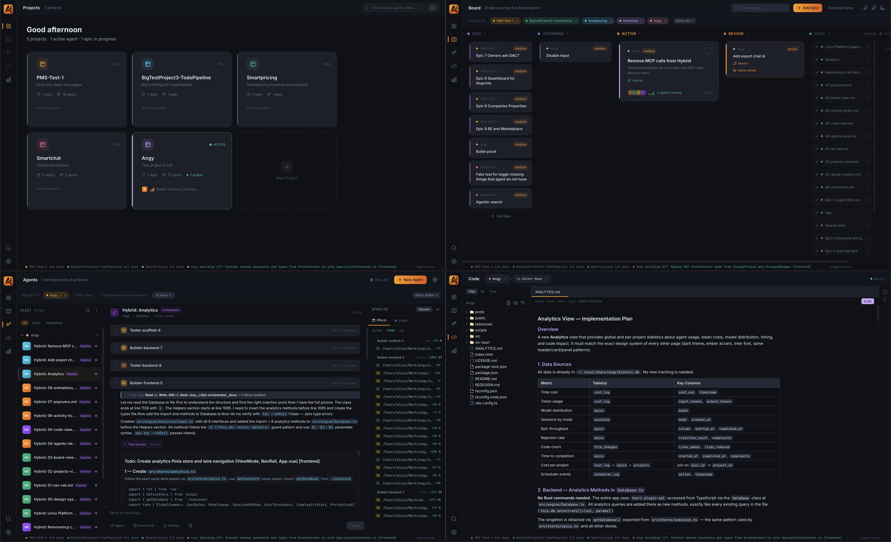
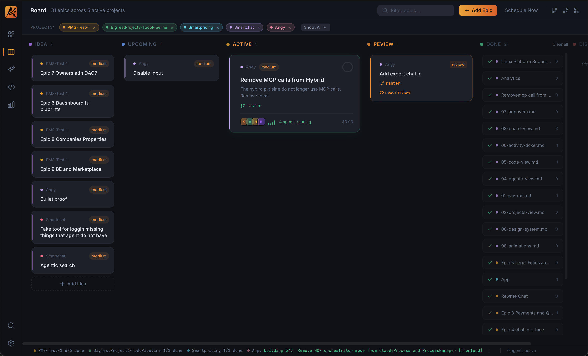
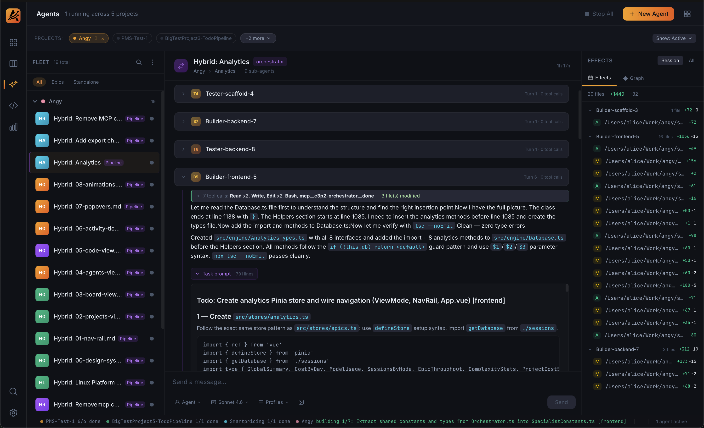
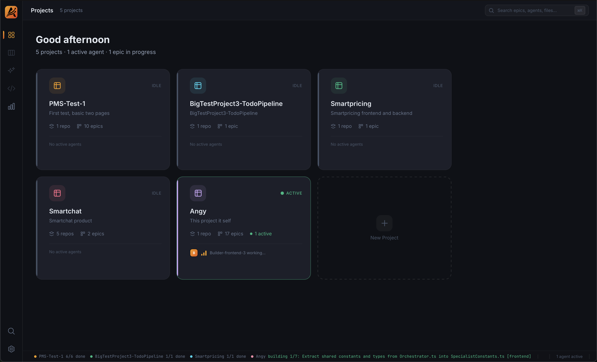
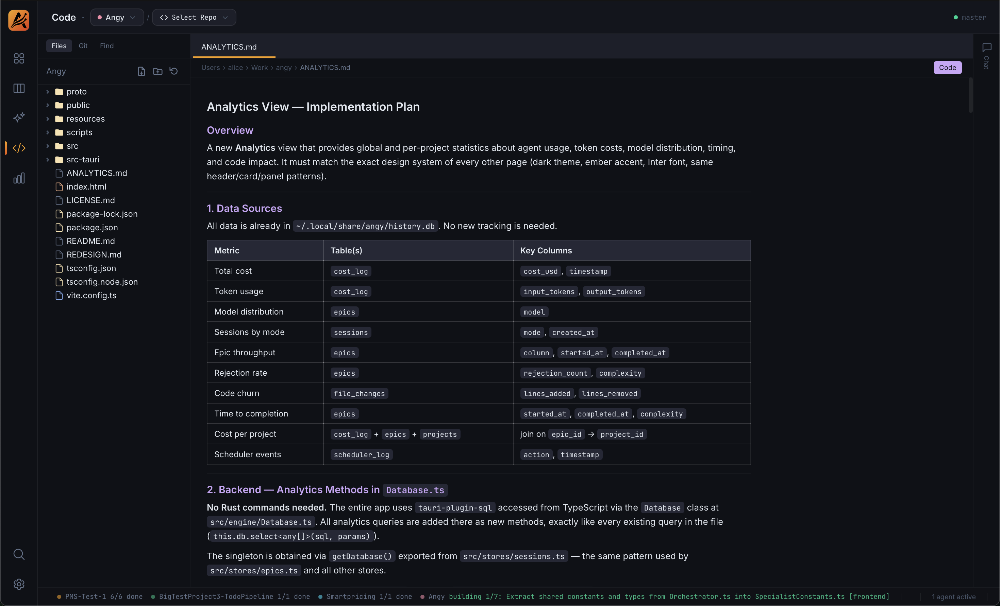

Angy is a multi-agent orchestration platform that breaks complex software goals into structured epics, assigns specialist AI agents, and ships code — autonomously.

A complete platform for defining, orchestrating, and reviewing AI-driven development — from goal to merged PR.
Visualize every epic and task across columns — Backlog, In Progress, Review, Done. Drag, reprioritize, and track progress at a glance.
Architect, Implementer, Reviewer, and Tester agents collaborate in parallel. Each specialist handles its role autonomously within a scoped epic branch.
Inspect live agent output, diffs, and file changes directly in the UI. Full syntax highlighting and real-time streaming as agents write code.
Queue epics, set priorities, and let the scheduler orchestrate agents across projects automatically — even while you sleep.
Define a goal. Angy handles the rest — planning, implementing, reviewing, and testing through a structured multi-agent pipeline.
Track each epic as it moves through the pipeline. The Kanban board gives you a real-time view of agent activity, blockers, and progress across all your projects simultaneously.

Each agent is a Claude subprocess with a defined role, scoped context, and clear deliverables. Agents collaborate on a shared epic branch without stepping on each other.

Angy supports multiple repositories and projects simultaneously. Switch between codebases, assign epics per project, and monitor agent activity across your entire portfolio.

The Code View streams agent output as it happens — file edits, diffs, shell commands, and test results. Full syntax highlighting powered by JetBrains Mono.

Angy is open source and free to self-host. Clone the repo, configure your Claude API key, and run your first epic in minutes.
View on GitHub